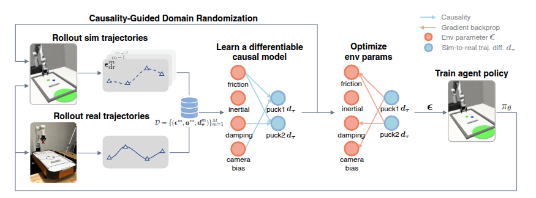
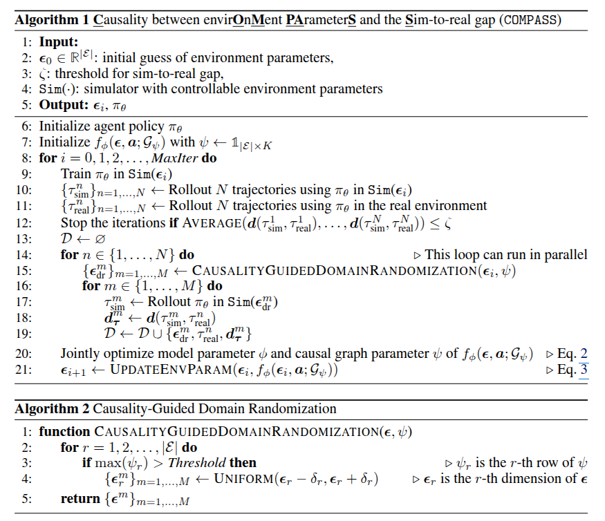
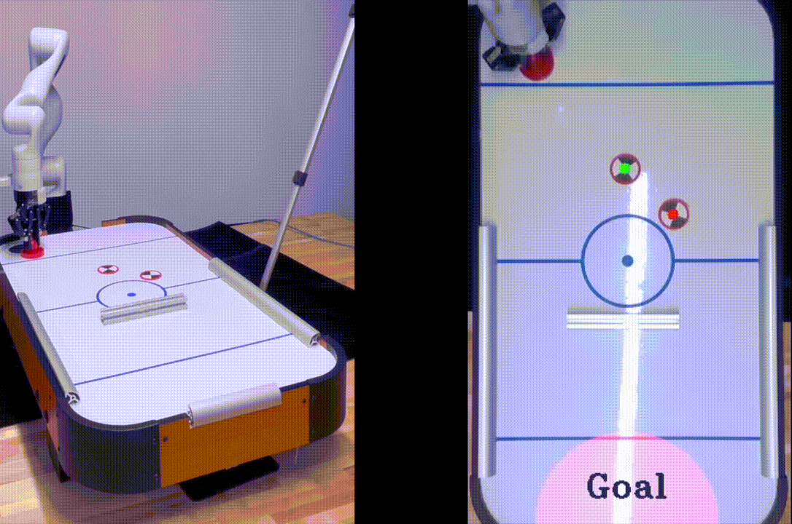
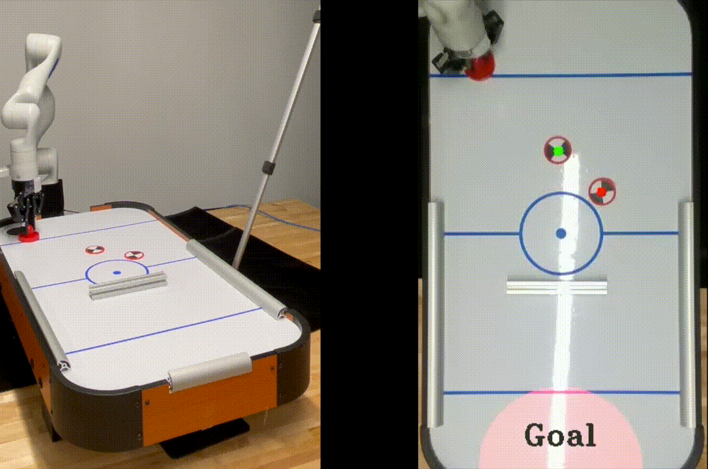

Identify parameters that induce simulation-to-real behavior.
1 Background and Motivation
이전 논문인 DiAReL은 sim-to-real gap 문제를 해결하기 위해 disturbance awareness라는 새로운 접근법을 제시했습니다.
저자들은 uncertainty나 disturbance를 명시적으로 추정하고 이를 RL agent의 state space에 포함시켰습니다. 하지만 역동역학 모델이 nominal system을 완벽하게 반영하지 못한다면, 추정된 외란은 잘못된 정보를 바탕으로 학습될 수 있습니다.
또한, nominal system조차 시뮬레이션 상의 물리 엔진에 의존하기 때문에, 이를 정확히 포착한다 하더라도 결국 시뮬레이터의 한계를 벗어나지 못하게 됩니다.
1.1 Sim2Real Gap의 근본 원인
- 시뮬레이션 환경(Source Domain)과 실제 환경(Target Domain) 간에는 불일치가 존재합니다.
- 이 불일치는 단순한 외란이나 노이즈뿐만 아니라, 시뮬레이터 자체가 실제 물리 시스템을 부정확하게 모델링했기 때문에 발생합니다.
- 예: 시뮬레이터의 마찰, 관성, 액추에이터 모델은 실제와 다를 수 있으며, 이를 기반으로 nominal system을 학습하더라도 현실에서는 오차가 발생할 수 있습니다.
특히 접촉(contact) 및 충돌(collision)과 같은 비선형 역학은 간단한 물리 모델로 시뮬레이션 하기에 한계가 있으며, 따라서 실제 세계의 역학을 더 잘 반영하는 방식이 요구됩니다. 아래 소개할 논문은 이를 해결하기 위한 다른 접근을 제안합니다.
2 Introduction
Domain Randomization은 sim-to-real gap을 줄이는 데 효과적이지만, “내 시뮬레이터에 무엇이 잘못되었는가?” 혹은 “sim-to-real gap을 줄이기 위해 어떤 매개변수를 조정해야 하는가?”라는 근본적인 질문에 직접적인 답을 제공하지는 못합니다.
이 논문에서는 실제 환경과 시뮬레이션 환경 간의 불일치를 유발하는 핵심 환경 매개변수를 식별하는 estimation framework인 COMPASS를 제안합니다. COMPASS는 causal relationships를 통해 시뮬레이터가 실제 환경의 dynamics를 더 잘 모방할 수 있도록 조정합니다.
4 COMPASS

COMPASS는 환경 매개변수 \(\varepsilon\)과 action sequence \(\mathbf{a} = [a_0, \dots, a_T]\)를 궤적 차이 \(d_{\tau}\)에 매핑하는 causal model \(f_\phi(\varepsilon, \mathbf{a}; G)\)를 학습합니다. 여기서 \(G\)는 causal graph를 나타냅니다.
4.1 Causal Model
Causal model은 시뮬레이터의 환경 매개변수와 로봇의 행동 시퀀스가 시뮬레이션-실제 궤적 차이에 어떤 영향을 미치는지를 학습합니다. 단순한 상관관계가 아닌 causal relationship을 추론하는 데 목적이 있습니다.
4.1.1 1. Causal Graph (G)
Causal graph는 환경 매개변수(마찰, 질량 등)가 궤적 차이에 미치는 인과적 영향을 모델링하며, 다음 기능을 제공합니다:
- Interpretability: 어떤 파라미터가 영향을 미치는지 시각적으로 해석 가능
- Search Space Pruning: 인과 관계가 없는 파라미터를 제외하여 탐색 공간 축소
- Generalization 향상: 핵심적인 인과관계에 집중함으로써 unseen 환경에서도 좋은 예측 성능 유지
Causal graph \(G\)는 binary adjacency matrix \(\psi\)로 표현되며, \(\psi_{ij} = 1\)이면 i번째 매개변수가 j번째 궤적 차이에 영향을 미친다는 의미입니다. Gumbel-Softmax를 사용하여 이산적 그래프를 differentiable하게 학습합니다.
Causal graph는 다음 loss를 최소화하며 jointly 학습됩니다:
\[ L_{\phi,\psi} = \frac{1}{M} \sum_{m=1}^{M} \|f_{\phi}(\varepsilon_m, \mathbf{a}_m; G_{\psi}) - d^{(m)}_{\tau}\|_2^2 + \lambda \|\psi\|_p^p \]
첫 번째 항은 예측 오차, 두 번째 항은 그래프 sparsity 유도 항으로서, 불필요한 causal connection을 제거합니다.
4.1.2 2. Structural Causal Model
Structural Causal Model은 위의 인과 그래프를 이용해 실제 trajectory error를 예측합니다. 이 모델은 학생(f_), 컨닝페이퍼(G_), 시험문제(d_), 채점(loss 계산)으로 비유될 수 있습니다. 학생은 G_활용하여 예측을 수행하며, loss를 줄이기 위해 반복 학습합니다.
5 COMPASS 학습 절차

COMPASS는 다음 5단계를 반복 수행하여 시뮬레이터를 실제 환경에 점진적으로 정렬시킵니다.
5.1 Agent Policy 학습 (sim-only)
현재 환경 매개변수 \(\varepsilon_i\)로 구성된 시뮬레이터에서 RL agent의 policy를 학습합니다.
5.2 Trajectory 수집 (sim + real)
- 훈련된 policy로 \(n\)개의 simulated trajectory \(\tau_{sim}^n\) 수집
- 같은 policy를 실제 로봇에 배포하여 \(\tau_{real}^n\) 수집
- 두 궤적 간 평균 오차 \(d_\tau\) 계산 → 임계값 이하이면 종료
5.3 Causal 모델 학습용 데이터 생성
- 이전 반복에서 학습한 \(G_\psi\)를 기반으로 중요한 매개변수만 randomization하여 새로운 \(\varepsilon_{dr}^m\) 생성
- 이에 따라 새롭게 \(\tau_{sim}^m\) 획득, 기존 \(\tau_{real}^n\)과 비교하여 \(d_\tau^m\) 계산
- 학습 데이터셋 \(D\) 구성
5.4 Causal 모델 및 그래프 학습
- 데이터셋 \(D\)를 사용하여 \(f_\phi\)와 \(\psi\)를 공동 최적화
- 손실함수 \(L_{\phi,\psi}\) 최소화
5.5 환경 파라미터 업데이트
- 학습된 \(f_\phi\)를 통해 \(\varepsilon_i\)에 대한 gradient 계산
- 이를 따라 \(\varepsilon_{i+1}\)로 업데이트하고, 다음 반복 진행
이 절차는 궤적 오차가 충분히 작아질 때까지 반복됩니다.
6 Air Hockey 실험 환경


Figure: Comparison between nominal (up) and COMPASS-adjusted environment (down).
실험은 장애물이 포함된 미니 에어하키 환경에서 수행되었습니다. 에이전트의 목표는 다음과 같은 복합 조작 과제를 해결하는 것입니다:
- 로봇 팔이 pusher를 이용해 첫 번째 puck을 타격
- 첫 번째 puck이 두 번째 puck과 충돌
- 두 번째 puck이 장애물을 피하며 벽을 맞고 목표 지점에 도달
이 환경은 물체 간의 충돌, 하키 테이블의 마찰 특성, 표면 반응 등 다양한 역학적 상호작용을 포함합니다.
저자들은 총 64개의 조절 가능한 환경 파라미터를 선언했습니다. 이 파라미터들은 다음과 같은 요소들과 관련되어 있습니다:
- 각 물체(pusher, puck1, puck2, 벽, 장애물)의 동역학 속성: damping, friction coefficient 등
- 센서 요소: 예를 들어 카메라 bias 등
6.1 COMPASS의 인과 관계 정렬 결과
COMPASS는 초기에는 모든 파라미터가 연결된 밀집한 인과 그래프에서 시작하지만, 단 두 번의 반복만에 매우 희소한 구조의 causal graph로 정렬되었습니다.
이는 COMPASS가 실제로 궤적 차이에 인과적 영향을 주는 파라미터만을 효과적으로 식별했다는 것을 의미합니다.
이 결과는 COMPASS가:
- 도메인 지식 없이도
- 탐색 공간을 기존 방법 대비 수십 배 축소하면서도
- 해석 가능성(interpretability)을 제공하는 강력한 도구임을 보여줍니다.
7 DiAReL vs. COMPASS
DiAReL에서 사용된 inverse dynamics model은 시뮬레이터에서 수집한 데이터를 바탕으로 학습되었습니다. 따라서 이 모델이 생성한 action은 현실이라면 이렇게 동작했을 것이 아닌, 시뮬레이터가 정의한 이상적인 동작에 불과합니다.
즉, 추정된 외란 역시 현실 기준의 오차가 아닌, 시뮬레이터 기준에서의 mismatch입니다.
반면 COMPASS는 시뮬레이터의 dynamics를 실제 환경에 맞추기 위한 프레임워크입니다. 실제 환경과 시뮬레이터의 trajectory 차이를 기준으로, 어떤 환경 파라미터가 오차를 유발하는지를 인과적으로 분석하고, 이를 기반으로 시뮬레이터 파라미터를 조정합니다.
두 방법 모두 일정 기준을 정한 후, 그 기준과의 오차를 측정해 시뮬레이터를 보정하는 방식입니다. 그러나 기준 자체가 다르다는 점에서 접근 방식이 명확히 갈립니다:
| 항목 | DiAReL | COMPASS |
|---|---|---|
| 기준 (Reference) | Nominal Simulation Dynamics (사전 정의된 sim) | Real-world Trajectory (실제 환경과의 오차) |
| 사용 모델 | Inverse Dynamics Model | Causal Graph + Structural Causal Model |
| 외란 추정 방식 | 시뮬레이터 모델과의 차이 기반 추정 | 실제 데이터 기반 궤적 차이를 인과적으로 분석 |
| 목적 | 외란 추정 및 보상 기반 강화학습 | 시뮬레이터 환경을 실제 환경에 점진적으로 정렬 |
sim-to-real 문제를 효과적으로 해결하기 위해서는 실제 환경 데이터를 활용한 fine-tuning이 결국 필요합니다. 물론 fine-tuning은 과정이 복잡하고 시간도 많이 소요되지만, nominal dynamics를 잘 정의할 수 있다면, DiAReL처럼 DOB 개념을 적용한 접근이 더 간단하고 효율적일 수도 있습니다.